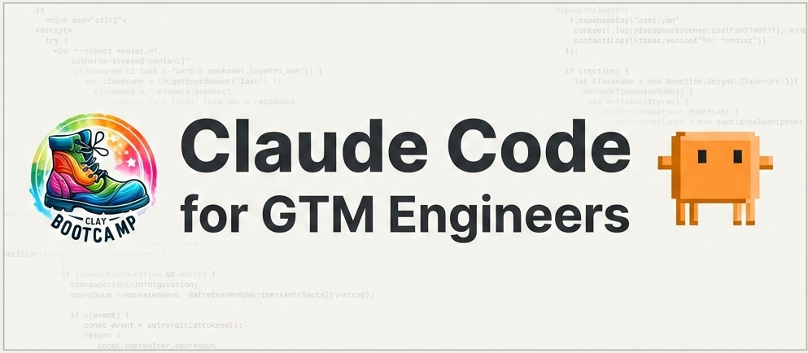

Claude Code is creating 10x GTMEs.
A 2-week jumpstart program to join their ranks.
We'll help you, a non-developer, go from FOMO, to ferociously productive – blowing your own damn mind – in 2 weeks. You'll learn Claude Code with a program led by "one of the world's top Claude Code coaches", Tanay Mishra, supported by the "Harvard of GTME", Clay Bootcamp 🥾.
- ✅ Learn from the instructor invited to teach Claude Code to Clay's team
- ✅ Follow on the heels of Cohort 1's breakout success (more below)
- ✅ Graduate into a powerful, close-knit network of 80+ GTM engineers building with AI
Only 10 seats. March 23 – April 3, 2026. Money-back guarantee.

You crave to unlock Claude Code's power.
But you need a kickstart.
You've seen the Twitter demos. You've felt the pit in your stomach when another "non-technical founder" ships something in a weekend that would've taken you months to spec out and hand off.
You know Claude Code could change your career. But every time you open the terminal, you freeze. "This is for developers, not me." So you close the laptop and tell yourself you'll figure it out later.
Here's what nobody tells you: the gap between you and those people is no longer technical. With Claude Code, you now have the superpower to build useful tools — without knowing how to code.
That's exactly what this program will help you do.
Cohort 1 had massive breakthroughs – Here's what they built:
A dozen participants. Two weeks. Here's what happened:
"I'd literally just installed Claude Code right before the session, and hearing him talk about what's possible and more importantly, that you don't need to know how to code gave me the push I needed to actually try building something."
Result: Built a system generating 11 posts/week across 3 accounts — went from 5+ hours to 2–3 hours.
"As a non-programmer, this foundation provides a clear 'north star' for my projects. The pacing, teaching style, and overall content far surpassed my expectations."
"I spent ALL of last Friday trying to debug code... This morning I told Claude Code what I needed and the magic happened — it did it for me in 2 minutes. In 1 hour, I set up the automation for 5 client channels. ONE HOUR."
GTM Ops @ Understory · Mentor @ Clay Bootcamp
"I think I've avoided these custom landing pages for a very long time. It looks like we have a template now and I can replicate it for hundreds and thousands of companies."
Clay Expert
Claude Code is creating 10x GTMEs. After 2 weeks, you'll be one, too.
You're here to become the GTM engineer who builds things.
The person on the team who doesn't wait for a developer. Who doesn't file a ticket and wait two sprints. Who opens a terminal, describes what they need, and ships it before lunch.
You'll become the go-to when something important needs to get done – and because of this your skills will keep on snowballing long after you graduate the cohort.
What you'll be able to do:
- Ship a live website in under an hour — not a template. A real site, on a real URL, that you built and deployed yourself.
- Build AI-powered research agents that do — pulling news, finding executives, surfacing quotes, and generating hyper-specific outreach angles with receipts.
- Use Git like a pro — Never wipe out days of work with one small mistake. Seasoned developers know this and we'll help you skip the line and the frustration of losing everything. Smooth sailing from week one.
- Connect Claude Code to live data using MCPs — so your agents don't just generate text, they investigate and think.
- Debug without panic — when something breaks (it will), you'll know exactly how to fix it using Claude Code itself.
The projects you build in this cohort are real and useful. But the bigger thing you walk away with is the muscle memory to build whatever you need, whenever you need it.
The syllabus – 2 weeks to Claude Code fluency
Week 1: Ship Fast, Build Habits
You'll go from "I've never opened a terminal" to deploying a live website with a custom domain — in the first session. By the end of week, you'll have Git fundamentals locked in and a portfolio piece live on the internet.
Week 2: Build an Investigative Research Agent
You'll build an AI-powered agent that connects to live data sources using MCPs. It doesn't just summarize — it actively investigates. Pulling news, identifying decision-makers, finding their public statements, and assembling outreach angles with evidence. This is the kind of tool that makes senior AEs ask "how the f did you find this?!"
The format:
- 8 live sessions over 14 days — 9:00 AM ET
- 2 teaching sessions/week (90 min) — I build live, you follow along
- 2 lab sessions/week (90 min) — you build, I troubleshoot, nobody gets left behind
- 20 seats max — so every person gets real, hands-on help
- Recordings available if you miss a session (but show up live — the magic is in the troubleshooting)
Your schedule:
| Day | Type | Time | Focus |
|---|---|---|---|
| Mon | Teaching | 9:00–10:30 AM ET | Core lesson + live build-along |
| Tue | Lab | 9:00–10:30 AM ET | Build time + troubleshooting |
| Thu | Teaching | 9:00–10:30 AM ET | Core lesson + live build-along |
| Fri | Lab | 9:00–10:30 AM ET | Build time + troubleshooting |
Your coach: Tanay Mishra
I'm not a developer. That's the whole point.
I've spent 10+ years in marketing automation — Infusionsoft, ManyChat, Zapier, Make, n8n — figuring out how to make technology do what business people actually need. I coach at Clay Bootcamp, where I help GTM engineers build robust systems that drive pipeline.
When Claude Code came out, I realized this tool was a strong fit for non-developers like us — people who understand business problems but never had a way to build technical solutions ourselves.
Now I've been invited to teach Claude Code to Clay's own team. And I've coached a dozen GTM professionals through their first builds — most of whom had never touched a terminal before.
I don't teach computer science. I teach non-technical people how to build real things with AI. That's it.
Join a powerful Claude Code tribe that lasts long after the program ends
When you graduate, you get lifetime access to a private community of 80+ GTM engineers who are building with Claude Code right now.
These are operators in the trenches — building Clay workflows, automating outbound, shipping tools, and pushing the boundaries of what non-technical people can do.
They share wins. They give feedback on each other's builds. They open doors.
This is the room you want to be in.
- Private community access that doesn't expire when the cohort ends
- First access to future personalized 1-to-1 Claude Code Coaching
- Direct access to Tanay for ongoing questions and support
$500 – or FREE if you put in the work.
Yes. This program is creating a new generation of super-productive Claude-Code-using GTMEs.
To give you extra motivation to break through, we'll allow high performers to win their initial $500 back which can be cashed in for hours of 1-1 Claude Code coaching, to take you to an even higher level of Claude Code skill after the cohort.
In order to earn your money back you must attend all 8 sessions, post about your progress on LinkedIn (building your brand), and show us the projects you built. Full details when you apply.
Quick math:
- A freelance developer for a simple landing page: $500–2,000
- Hiring an agency for internal tools: $5,000+
- An online course you'll never finish: $200–500 (plus months)
Or:
$500 to learn how to build these things yourself — in 14 days — with live help when you're stuck.
One project pays for the program. The skill pays for itself forever.
Only 20 seats. Applications close when they're filled.
Frequently Asked Questions
What times are the sessions?
All sessions run 9:00–10:30 AM ET. Teaching sessions are Monday and Thursday. Lab sessions are Tuesday and Friday. The cohort runs March 23 – April 3, 2026.
What if I'm not satisfied?
If you attend every session, do the work, and feel like the program didn't deliver — you get a full refund. No questions asked. I'm able to make this offer because Cohort 1 already proved the format works.
Do I need any technical experience?
No. Seriously. If you've used Zapier or written a spreadsheet formula, you have more than enough. I designed this for people who've never opened a terminal.
What if I fall behind?
That's what the lab sessions are for. Twice a week, you get 90 minutes of live troubleshooting time. If you're stuck, we fix it together. Nobody gets left behind.
What's the time commitment?
4 live sessions per week, 90 mins each — roughly 12 hours total. Plus whatever time you spend building on your own (which, once you get going, you'll want to do).
What if I can't make a session?
Sessions will be recorded. But the magic is in the live troubleshooting — so try to show up.
I'm already technical — is this too basic for me?
Probably. This is designed for non-technical GTM/RevOps/marketing folks. If you already use the terminal comfortably, you'll likely be bored.
Why should I trust you? You said you're not a developer.
Exactly. That's the point. I'm not going to teach you computer science. I'm going to show you how a non-technical person uses Claude Code to build real things — because that's what I do. And that's what you'll do.
What happens after the 2 weeks?
You keep your Private Community access — it doesn't go away when the cohort ends. You'll have the skills and the muscle memory to keep building, plus a network of GTM builders to learn with, share wins, and troubleshoot alongside. Graduates also get first access to future advanced cohorts.
What tools do I need to purchase to join?
The only thing you need is Claude Code. The Pro plan ($20/mo) works, but honestly — if you want to push Claude Code to its limits during the learning phase, I highly recommend the Max plan ($100/mo), which you can downgrade at the end of the month. You can also top up your usage wallet for a smaller, arbitrary amount. Fair warning: on the Pro plan, you will almost certainly run out of usage quickly, especially while we're testing and experimenting.
20 seats. March 2026. $500 – or free.
This is for the GTM engineer who's so done watching from the sidelines.
You don't need to become a developer. You need 14 days and
APPLY NOW →Questions? Reply to any email from me or DM me on LinkedIn.